Artificial Neural Network (ANN) 10 - Deep Learning III : Theano, TensorFlow, and Keras
Theano is a Python library that allows you to define, optimize, and evaluate mathematical expressions involving multi-dimensional arrays efficiently.
Theano has been developed to implement, compile, and evaluate mathematical expressions very efficiently with a strong focus on multidimensional arrays (tensors) which has a NumPy-like syntax (actually, it's built on top of NumPy), and it runs on either CPU or GPU.
Though most of deep learning utilizes GPUs, in this article, the use of GPUs will be optional, and we can still proceed with CPUs with multiple cores instead.
We can install Theano using pip:
$ sudo pip install theano
Theano is built around tensors to evaluate symbolic mathematical expressions.
Tensors is a generalization of scalars, vectors, matrices, and so on. A scalar can be defined as a rank-0 tensor, a vector as a rank-1 tensor, a matrix as rank-2 tensor, and matrices stacked in a third dimension as rank-3 tensors.
To be familiarize the tensor, we can start with the simple scalars from the Theano tensor module to compute a net input $z$ of a sample point $x$ in a one dimensional dataset with weight $w_1$ and bias $w_0$ like this:
$$ z = x_1 \times w_1 + w_0$$ 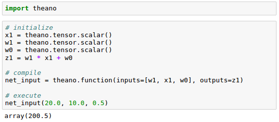As we can see from the code above, in order to write a code in Theano, we just have to follow three steps:
- define the symbols (variable objects)
- compile the code
- and then execute it
In our initialization, we defined three symbols, $x_1$, $w_1$, and $w_0$, to compute $z_1$. Then, we compiled a function net_input() with the three symbols as input, and then computed the net input $z_1$.
As we saw in the previous section, using Theano was pretty straightforward. However, we need to take a special attention when we write Theano code. Because the type of our variables (dtype) greatly affects the performance of the Theano code, we need to choose whether we want to use 64 or 32 bit integers or floats.
When we are implementing machine learning algorithms, we are mostly working with floating point numbers. By default, both NumPy and Theano use the double- precision floating-point format ( float64 ).
However, it would be very useful to toggle back and forth float64 (CPU), and float32 (GPU) when we are developing Theano code for prototyping on CPU and execution on GPU.
For example, to access the default settings for Theano's float variables, we can execute the following code:
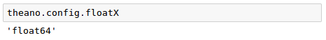We can set it as another type such as float32:
To set it globally via shell command line:
$ export THEANO_FLAGS=floatX=float32
Or we can apply our settings only to a particular Python script by running it like this:
THEANO_FLAGS=floatX=float32 python my_script.py
To check whether we are using CPU or GPU:
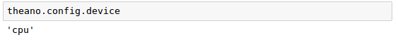We can run Theano code on our CPU by executing it a script, as from command-line terminal:
$ THEANO_FLAGS=device=cpu,floatX=float64 python my_script.py
Want to run it on GPU, we can then run it via the following code without making additional modifications to our original code:
$ THEANO_FLAGS=device=gpu,floatX=float32 python my_script.py
It may be convenient to create a .theanorc file in home directory to make these configurations permanent:
[global] floatX=float64 device=cpu
Or we can create the .theanorc file this way:
$ echo -e "\n[global]\nfloatX=float64\ndevice=cpu\n" >> ~/.theanorc
Let's check our current configuration for Theano:
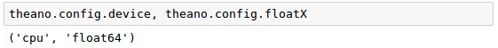We're going to learn how to use Theano's array, tensor module.
As an exercise, we will create a simple 2 x 3 matrix, and calculate the column sums using Theano's optimized tensor expressions:
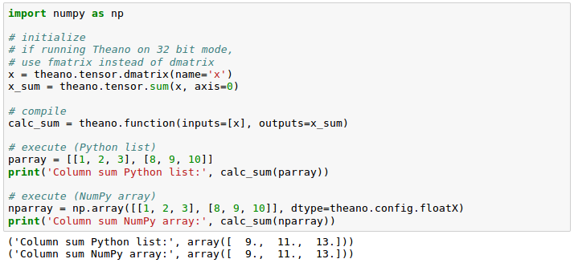We got the same results : [1,2,3]+[8,9,10]=[9,11,13]
Theano also has a memory reuse system that makes it fast. In other words, Theano spreads memory across multiple devices, CPUs and GPUs, and tracks changes in the memory space by aliasing respective buffers.
In the following example, we will use shared variable which allows us to spread large objects (arrays) and grants multiple functions read and write access. We can also perform updates on those objects after compilation.
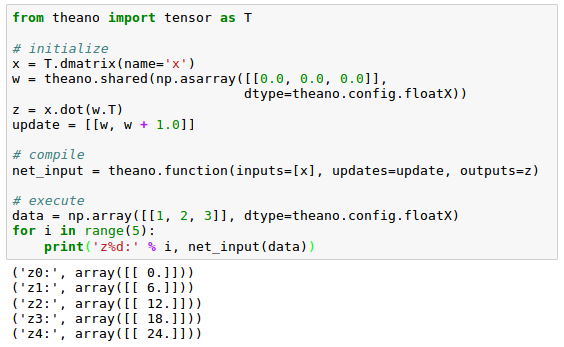In the code, we defined an update variable:
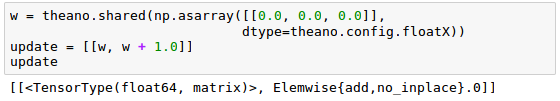where we declared that we want to update an array w by a value 1.0 after each iteration in the for loop.
[0,0,0]$\cdot$[1,2,3]=0, [1,1,1]$\cdot$[1,2,3]=6, [2,2,2]$\cdot$[1,2,3]=12 ...
After we defined which object we want to update and how, we passed this information to the update parameter of the theano.function compiler.
Another trick in Theano is to use the givens variable to insert values into the graph before compiling it.
Using this approach, we can reduce the number of transfers from RAM over CPUs to GPUs to speed up learning algorithms that use shared variables. If we use the inputs parameter in theano.function , data is transferred from the CPU to the GPU multiple times, for example, if we iterate over a dataset multiple times (epochs) during gradient descent.
Using givens, we can keep the dataset on the GPU if it fits into its memory (for example, if we are learning with mini-batches). The code is as follows:
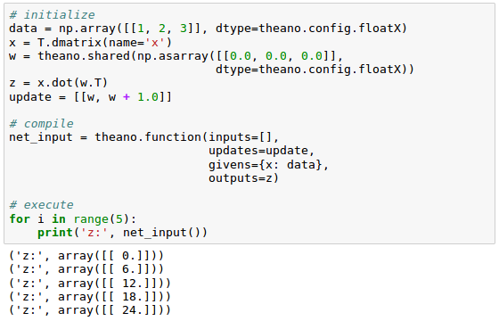Let's start by creating one-dimensional dataset with five training samples:

Now, we may want to implement a training function to learn the weights of the linear regression model, using the sum of squared errors cost function:
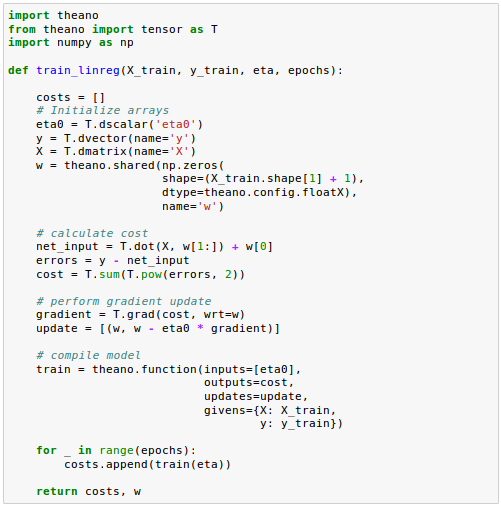The grad() function automatically computes the derivative of an expression with respect to its parameters passed as the wrt argument.
Now that the training function is implemented, we can train our linear regression model and check if Sum of Squared Errors (SSE) cost function is converging:
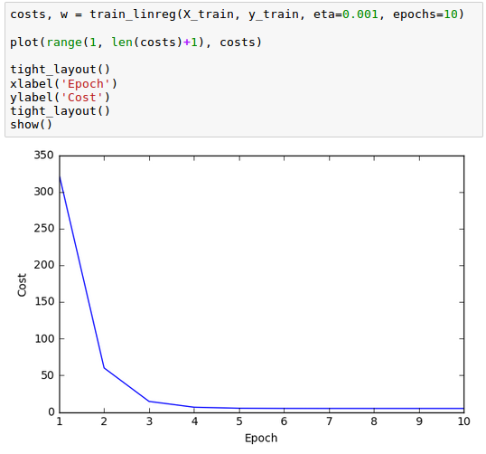As we can see from the plot above, the learning algorithm already converged after epoch 5.
Now that we built a working regression model, let's compile a new function to make predictions based on the input features:
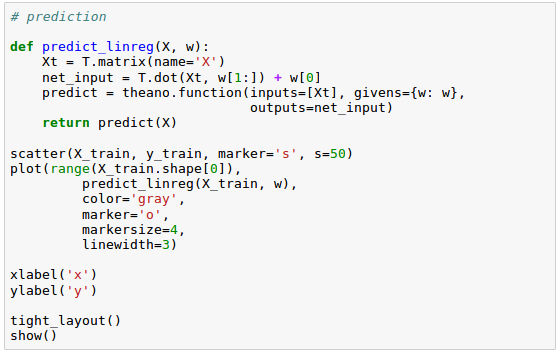
Keras is one of the most recently developed libraries to facilitate neural network training.
Keras is a high-level neural networks library, written in Python and capable of running on top of either TensorFlow or Theano. It was developed with a focus on enabling fast experimentation.
Since started in 2015, Keras has evolved into one of the most popular and widely used libraries, and it allows us to utilize our GPU to accelerate neural network training.
Let's install Keras:
$ sudo pip install Keras
We may also need to install tensorflow:
$ sudo pip install tensorflow
In this section, we'll train neural network via Keras. We'll classify the handwritten digits from the MNIST dataset, which we introduced in Artificial Neural Networks (ANN) 9 - Deep Learning II : Image Recognition (Image classification).
As we've done before, we place the files under a directory mnist in our current working directory so that we can load the training as well as the test dataset using the function defined like this:
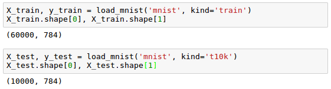
Let's cast the MNIST image array into 64-bit format:
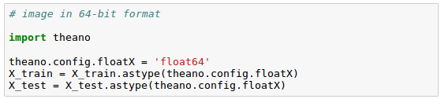Now we may want to convert the class labels (integers 0-9) into the one-hot format (one-hot encoding), and we'll use Keras's tool for this:
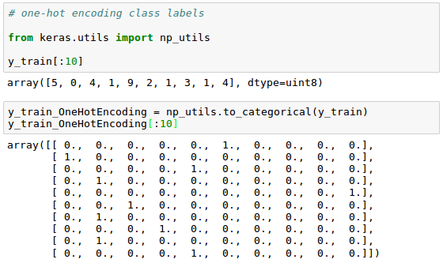We're ready to implement a neural network. However, unlike Artificial Neural Networks (ANN) 9 - Deep Learning II : Image Recognition (Image classification), we will replace the logistic units in the hidden layer with hyperbolic tangent activation functions, and will replace the logistic function in the output layer with softmax, and add an additional hidden layer.
Keras makes these tasks very simple, as we can see the code below:
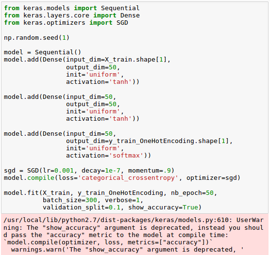Note that we set the cost (or loss) function to categorical_crossentropy which is its generalization for multi-class predictions via softmax.
After compiling the model, we can now train it by calling the fit() method.
We are using mini-batch stochastic gradient with a batch size of 300 training samples per batch. We train the MLP over 50 epochs, and we can follow the optimization of the cost function during training by setting verbose=1.
The validation_split parameter will reserve 10 percent of the training data (in our case, 6,000 samples) for validation after each epoch so that we can check if the model is overfitting during training.
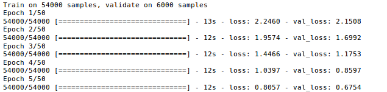
....
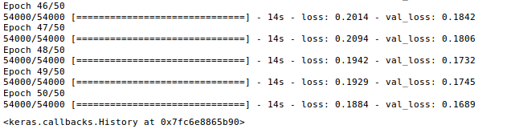In the code, we initialize a new model using the Sequential class to implement a feedforward neural network. Then, we can add as many layers to it as we like.
Because the first layer that we add is the input layer, we have to make sure that the input_dim attribute matches the number of features (columns) in the training set (here, 768).
Also, we have to make sure that the number of output units (output_dim) and input units (input_dim) of two consecutive layers match.
Note that we added two hidden layers with 50 hidden units plus 1 bias unit each.
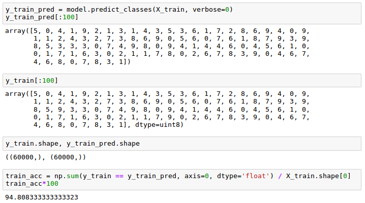Python Machine Learning by Sebastian Raschka
Machine Learning with scikit-learn
scikit-learn installation
scikit-learn : Features and feature extraction - iris dataset
scikit-learn : Machine Learning Quick Preview
scikit-learn : Data Preprocessing I - Missing / Categorical data
scikit-learn : Data Preprocessing II - Partitioning a dataset / Feature scaling / Feature Selection / Regularization
scikit-learn : Data Preprocessing III - Dimensionality reduction vis Sequential feature selection / Assessing feature importance via random forests
Data Compression via Dimensionality Reduction I - Principal component analysis (PCA)
scikit-learn : Data Compression via Dimensionality Reduction II - Linear Discriminant Analysis (LDA)
scikit-learn : Data Compression via Dimensionality Reduction III - Nonlinear mappings via kernel principal component (KPCA) analysis
scikit-learn : Logistic Regression, Overfitting & regularization
scikit-learn : Supervised Learning & Unsupervised Learning - e.g. Unsupervised PCA dimensionality reduction with iris dataset
scikit-learn : Unsupervised_Learning - KMeans clustering with iris dataset
scikit-learn : Linearly Separable Data - Linear Model & (Gaussian) radial basis function kernel (RBF kernel)
scikit-learn : Decision Tree Learning I - Entropy, Gini, and Information Gain
scikit-learn : Decision Tree Learning II - Constructing the Decision Tree
scikit-learn : Random Decision Forests Classification
scikit-learn : Support Vector Machines (SVM)
scikit-learn : Support Vector Machines (SVM) II
Flask with Embedded Machine Learning I : Serializing with pickle and DB setup
Flask with Embedded Machine Learning II : Basic Flask App
Flask with Embedded Machine Learning III : Embedding Classifier
Flask with Embedded Machine Learning IV : Deploy
Flask with Embedded Machine Learning V : Updating the classifier
scikit-learn : Sample of a spam comment filter using SVM - classifying a good one or a bad one
Machine learning algorithms and concepts
Batch gradient descent algorithmSingle Layer Neural Network - Perceptron model on the Iris dataset using Heaviside step activation function
Batch gradient descent versus stochastic gradient descent
Single Layer Neural Network - Adaptive Linear Neuron using linear (identity) activation function with batch gradient descent method
Single Layer Neural Network : Adaptive Linear Neuron using linear (identity) activation function with stochastic gradient descent (SGD)
Logistic Regression
VC (Vapnik-Chervonenkis) Dimension and Shatter
Bias-variance tradeoff
Maximum Likelihood Estimation (MLE)
Neural Networks with backpropagation for XOR using one hidden layer
minHash
tf-idf weight
Natural Language Processing (NLP): Sentiment Analysis I (IMDb & bag-of-words)
Natural Language Processing (NLP): Sentiment Analysis II (tokenization, stemming, and stop words)
Natural Language Processing (NLP): Sentiment Analysis III (training & cross validation)
Natural Language Processing (NLP): Sentiment Analysis IV (out-of-core)
Locality-Sensitive Hashing (LSH) using Cosine Distance (Cosine Similarity)
Artificial Neural Networks (ANN)
[Note] Sources are available at Github - Jupyter notebook files1. Introduction
2. Forward Propagation
3. Gradient Descent
4. Backpropagation of Errors
5. Checking gradient
6. Training via BFGS
7. Overfitting & Regularization
8. Deep Learning I : Image Recognition (Image uploading)
9. Deep Learning II : Image Recognition (Image classification)
10 - Deep Learning III : Deep Learning III : Theano, TensorFlow, and Keras
Ph.D. / Golden Gate Ave, San Francisco / Seoul National Univ / Carnegie Mellon / UC Berkeley / DevOps / Deep Learning / Visualization